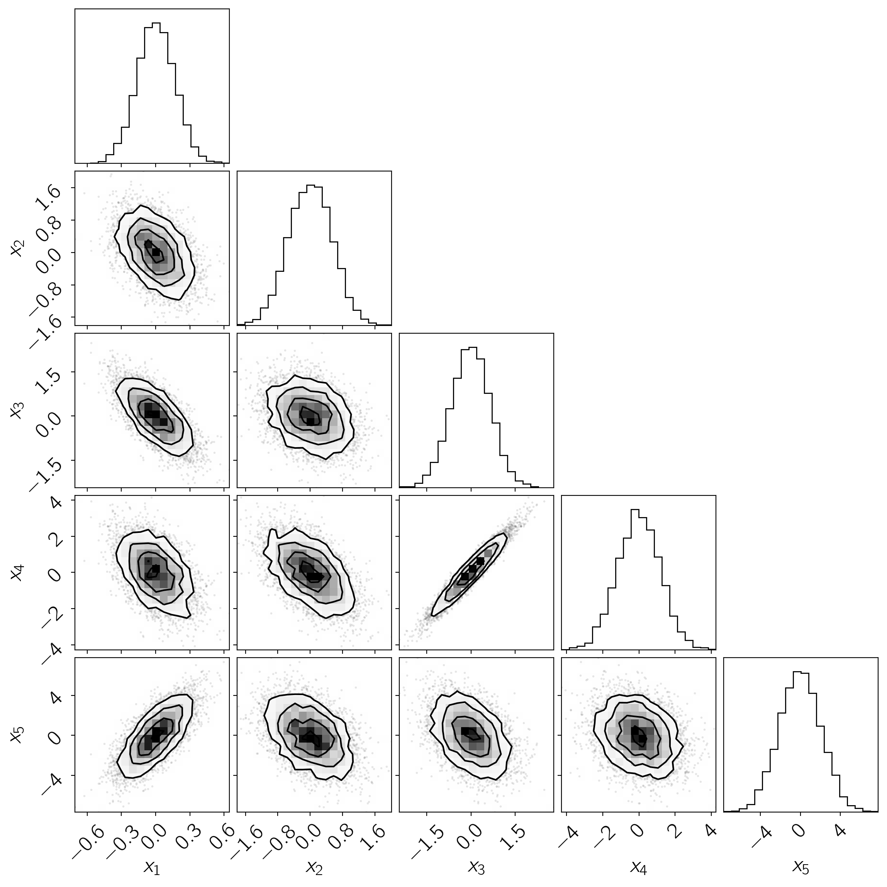

Dense mass matrices for PyMC3
In my work I often come across probabilistic models where there are strong correlations between parameters. This certainly isn’t a special feature of the problems that I work on, and the general advice from MCMC practitioners is that we should reparameterize our models in some form that removes the covariances, but this isn’t always practical. One of the reasons why emcee has been popular in astrophysics (I think) is that it uses an “affine invariant” algorithm. This means that when you use emcee, the performance will be (more-or-less) the same for any problems that are affine transformations of each other. In other words, it doesn’t care about translations, rotations, or scalings of the parameters.
Standard HMC methods such as the NUTS algorithm implemented in state-of-the-art libraries like PyMC3 and Stan do not have this property. [Note: it is actually possible to construct an affine invariant NUTS sampler using some of the ideas from emcee, but there are some limitations and this will hopefully be the topic of a paper that I write someday…] The performance of this method is generally very sensitive to the “metric” or “mass matrix” that is used and changes in parameterization can make a huge difference in the efficiency of sampling using these packages. To deal with covariances, Stan has support for learning the off-diagonal elements of the mass matrix during burn-in. The basic idea is that (in the Gaussian case) the optimal mass matrix will be equal to the inverse covariance of the posterior. Therefore, you can estimate the sample covariance of burn-in chains and use that as the inverse mass matrix in subsequent samplings. While PyMC3 has the machinery to support this, out of the box it only supports learning of the diagonal elements of the mass matrix during the tuning phase (as far as I can tell - please correct me if I’m wrong!).
In this blog post, I demonstrate how covariances can cause serious problems for PyMC3 on a simple (but not contrived) toy problem and then I show a way that you can use the existing features in PyMC3 to implement a tuning schedule similar to the one used by Stan and fit for the full dense mass matrix. I have found that this can have a huge effect (a few orders of magnitude in the example shown here) on the computational efficiency of PyMC3 on the types of problems that are common in astrophysics.
Sampling an isotropic Gaussian#
First, let’s look at how fast PyMC3 can sample an isotropic 5-D Gaussian.
import time
import pymc3 as pm
print("PyMC3 version {0}".format(pm.__version__))
ndim = 5
with pm.Model() as simple_model:
pm.Normal("x", shape=(ndim,))
strt = time.time()
with simple_model:
simple_trace = pm.sample(draws=3000, tune=3000, random_seed=42)
# About half the time is spent in tuning so correct for that
simple_time = 0.5*(time.time() - strt)
stats = pm.summary(simple_trace)
simple_time_per_eff = simple_time / stats.n_eff.min()
print("time per effective sample: {0:.5f} ms".format(simple_time_per_eff * 1000))
Auto-assigning NUTS sampler...
Initializing NUTS using jitter+adapt_diag...
PyMC3 version 3.5
Multiprocess sampling (2 chains in 2 jobs)
NUTS: [x]
Sampling 2 chains: 100%|██████████| 12000/12000 [00:04<00:00, 2501.80draws/s]
time per effective sample: 0.26766 ms
On my laptop with two CPUs, I find that the computational cost per effective sample is a fraction of a millisecond. That’s how things should be!
Sampling a covariant Gaussian#
Now let’s try an example where the dimensions of our Gaussian are correlated and see how the default performance of PyMC3 compares. First, let’s take a look at a corner plot of the posterior that we’re targeting.
import numpy as np
import corner # https://corner.readthedocs.io
# Generate a random positive definite matrix
np.random.seed(42)
L = np.random.randn(ndim, ndim)
L[np.diag_indices_from(L)] = 0.1*np.exp(L[np.diag_indices_from(L)])
L[np.triu_indices_from(L, 1)] = 0.0
cov = np.dot(L, L.T)
# Draw samples from this Gaussian and plot
samples = np.random.multivariate_normal(np.zeros(ndim), cov, size=5000)
corner.corner(samples, labels=["$x_{{{0}}}$".format(i) for i in range(1, ndim+1)]);

This plot will look familiar to any astronomers reading this (and probably some readers from other fields) because our parameters are often correlated and the dynamic range of the parameters can vary drastically. If you used emcee to sample this posterior and the isotropic case above, you would get identical performance (albeit somewhat worse performance than PyMC3) but, as we’ll see, the same is not true of PyMC3. Let’s try to sample this probability density using PyMC3’s default settings.
with pm.Model() as model:
pm.MvNormal("x", mu=np.zeros(ndim), chol=L, shape=(ndim,))
with model:
strt = time.time()
default_trace = pm.sample(draws=10000, tune=5000, random_seed=42)
default_time = 0.5 * (time.time() - strt)
stats = pm.summary(default_trace)
default_time_per_eff = default_time / stats.n_eff.min()
print("time per effective sample: {0:.5f} ms".format(default_time_per_eff * 1000))
Auto-assigning NUTS sampler...
Initializing NUTS using jitter+adapt_diag...
Multiprocess sampling (2 chains in 2 jobs)
NUTS: [x]
Sampling 2 chains: 100%|██████████| 30000/30000 [42:44<00:00, 6.01draws/s]
The chain reached the maximum tree depth. Increase max_treedepth, increase target_accept or reparameterize.
The chain reached the maximum tree depth. Increase max_treedepth, increase target_accept or reparameterize.
The number of effective samples is smaller than 10% for some parameters.
time per effective sample: 1719.01749 ms
Yes, the units here are the same and the computational efficiency is orders of magnitude worse than the isotropic case. The standard recommendation would be to re-parameterize (we can see that that’s what PyMC3 is telling us to do here too), but I’m not really clever or patient enough to do that in every case. So, let’s automate this following the procedure from Stan.
Learning the mass matrix in PyMC3#
In this section, I will demonstrate how we can use the machinery included in the current release of PyMC3 to fit for a dense mass matrix during burn-in. First, let’s choose a tuning schedule roughly following section 34.2 from the Stan manual .
n_start = 25
n_burn = 500
n_tune = 5000
n_window = n_start * 2 ** np.arange(np.floor(np.log2((n_tune - n_burn) / n_start)))
n_window = np.append(n_window, n_tune - n_burn - np.sum(n_window))
n_window = n_window.astype(int)
Next, here’s a function that takes in a MultiTrace object from PyMC3, estimates the sample covariance, and builds a NUTS step for use in the sample method.
from pymc3.step_methods.hmc.quadpotential import QuadPotentialFull
def get_step_for_trace(trace=None, model=None,
regular_window=5, regular_variance=1e-3,
**kwargs):
model = pm.modelcontext(model)
# If not given, use the trivial metric
if trace is None:
potential = QuadPotentialFull(np.eye(model.ndim))
return pm.NUTS(potential=potential, **kwargs)
# Loop over samples and convert to the relevant parameter space;
# I'm sure that there's an easier way to do this, but I don't know
# how to make something work in general...
samples = np.empty((len(trace) * trace.nchains, model.ndim))
i = 0
for chain in trace._straces.values():
for p in chain:
samples[i] = model.bijection.map(p)
i += 1
# Compute the sample covariance
cov = np.cov(samples, rowvar=0)
# Stan uses a regularized estimator for the covariance matrix to
# be less sensitive to numerical issues for large parameter spaces.
# In the test case for this blog post, this isn't necessary and it
# actually makes the performance worse so I'll disable it, but I
# wanted to include the implementation here for completeness
N = len(samples)
cov = cov * N / (N + regular_window)
cov[np.diag_indices_from(cov)] += \
regular_variance * regular_window / (N + regular_window)
# Use the sample covariance as the inverse metric
potential = QuadPotentialFull(cov)
return pm.NUTS(potential=potential, **kwargs)
Finally, we can combine our tuning schedule with this proposal estimator to automatically learn the mass matrix during burn-in.
np.random.seed(42)
strt = time.time()
with model:
start = None
burnin_trace = None
for steps in n_window:
step = get_step_for_trace(burnin_trace, regular_window=0)
burnin_trace = pm.sample(
start=start, tune=steps, draws=2, step=step,
compute_convergence_checks=False, discard_tuned_samples=False)
start = [t[-1] for t in burnin_trace._straces.values()]
step = get_step_for_trace(burnin_trace, regular_window=0)
dense_trace = pm.sample(draws=5000, tune=n_burn, step=step, start=start)
factor = 5000 / (5000 + np.sum(n_window+2) + n_burn)
dense_time = factor * (time.time() - strt)
stats = pm.summary(dense_trace)
dense_time_per_eff = dense_time / stats.n_eff.min()
print("time per effective sample: {0:.5f} ms".format(dense_time_per_eff * 1000))
Only 2 samples in chain.
Multiprocess sampling (2 chains in 2 jobs)
NUTS: [x]
Sampling 2 chains: 100%|██████████| 54/54 [00:01<00:00, 41.49draws/s]
The chain reached the maximum tree depth. Increase max_treedepth, increase target_accept or reparameterize.
The chain reached the maximum tree depth. Increase max_treedepth, increase target_accept or reparameterize.
Only 2 samples in chain.
Multiprocess sampling (2 chains in 2 jobs)
NUTS: [x]
Sampling 2 chains: 100%|██████████| 104/104 [00:00<00:00, 232.25draws/s]
Only 2 samples in chain.
Multiprocess sampling (2 chains in 2 jobs)
NUTS: [x]
Sampling 2 chains: 100%|██████████| 204/204 [00:00<00:00, 800.87draws/s]
Only 2 samples in chain.
Multiprocess sampling (2 chains in 2 jobs)
NUTS: [x]
Sampling 2 chains: 100%|██████████| 404/404 [00:00<00:00, 1043.13draws/s]
Only 2 samples in chain.
Multiprocess sampling (2 chains in 2 jobs)
NUTS: [x]
Sampling 2 chains: 100%|██████████| 804/804 [00:00<00:00, 1064.61draws/s]
Only 2 samples in chain.
Multiprocess sampling (2 chains in 2 jobs)
NUTS: [x]
Sampling 2 chains: 100%|██████████| 1604/1604 [00:01<00:00, 884.55draws/s]
Only 2 samples in chain.
Multiprocess sampling (2 chains in 2 jobs)
NUTS: [x]
Sampling 2 chains: 100%|██████████| 3204/3204 [00:03<00:00, 905.63draws/s]
Only 2 samples in chain.
Multiprocess sampling (2 chains in 2 jobs)
NUTS: [x]
Sampling 2 chains: 100%|██████████| 2654/2654 [00:03<00:00, 868.36draws/s]
Multiprocess sampling (2 chains in 2 jobs)
NUTS: [x]
Sampling 2 chains: 100%|██████████| 11000/11000 [00:09<00:00, 1206.30draws/s]
time per effective sample: 0.75394 ms
The computational efficiency of this method is similar to PyMC3’s default performance on an isotropic Gaussian (within a factor of a few) and corresponds to an improvement of more than three orders of magnitude over the default PyMC3 performance on a correlated Gaussian.
While I’ve found that this procedure can substantially improve the sampling efficiency in many real world scenerios (especially during exploratory phases of a project), you shouldn’t forget about reparameterization because that can provide even better performance and help identify problems with your model specification. Futhermore, this method might run into numerical issues for high dimensional problems because more samples will be needed to reliably estimate the off-diagonal elements of the mass matrix. Either way, hopefully this is helpful to folks until PyMC3 includes native support for this type of procedure.